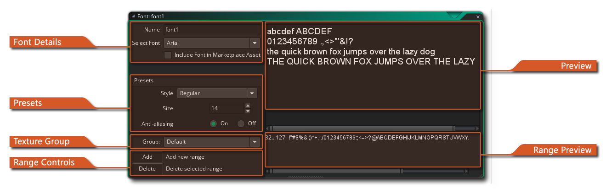
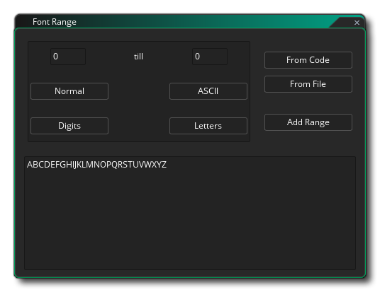

 Wenn Sie Text in Ihrem Spiel zeichnen möchten, wird dieser Text in einer Arial 12-Punkte-Standardschriftart gezeichnet, aber um interessantere oder einzigartig aussehende Texte zu erstellen, werden Sie wahrscheinlich verschiedene Schriftarten verwenden wollen. Um verschiedene Schriftarten auf Ihrem Computer zu verwenden, müssen Sie in GameMaker Studio 2 eine Font-Ressource erstellen. Dies geschieht durch Rechtsklick  im Ordner "Fonts" im Ressourcenbaum und klicken Sie auf "Erstellen". Für jede Schriftartenressource, die Sie erstellen, geben Sie einen bestimmten Schriftartentyp von Ihrem Computer an, der dann in Ihrem Spiel mit der Aktion oder dem Code verwendet werden kann, um eine Schriftart für das Zeichnen festzulegen.
im Ordner "Fonts" im Ressourcenbaum und klicken Sie auf "Erstellen". Für jede Schriftartenressource, die Sie erstellen, geben Sie einen bestimmten Schriftartentyp von Ihrem Computer an, der dann in Ihrem Spiel mit der Aktion oder dem Code verwendet werden kann, um eine Schriftart für das Zeichnen festzulegen.
Wenn Sie zum ersten Mal eine Font-Ressource erstellen, wird das Font-Editor-Fenster mit den folgenden Optionen geöffnet:
Hier können Sie Ihrer Schriftart einen eindeutigen Namen geben (nur alphanumerische Zeichen und das Unterstrichsymbol "_") und die zu verwendende Schriftart auswählen. Die Schriftart muss auf Ihrem Computer installiert sein, und aufgrund von Lizenzproblemen speichert GameMaker Studio 2 die eigentlichen Schriftartdateien nicht standardmäßig mit der Projektdatei, sondern die Schriftart wird auf einer Texturseite als vorgerenderte Glyphen gerendert. Wenn Sie die eigentliche Schriftdatei ( *.ttf nur) zusammen mit dem Projekt, wenn Sie ein Marketplace-Asset erstellen, dann können Sie die Option Schriftart in Marketplace-Asset einschließen aktivieren. Dadurch wird der Datei-Explorer geöffnet, in dem Sie die Schriftartdatei auswählen können, die dann den mit dem Projekt gebündelten Dateien hinzugefügt wird.
WICHTIGER HINWEIS: Sie sollten nur Fonts verwenden, die Sie gesetzlich erlaubt und lizenziert haben, um sie in Ihrem Projekt weiterzuverbreiten oder zu verwenden.
In diesem Abschnitt können Sie die Größe (in Punkten - Standard ist 12pt) und ob die Schriftart fett oder kursiv gezeichnet oder Anti-Aliasing (Kantenglättung) angewendet werden soll. Das Vorschaufenster auf der rechten Seite zeigt Ihnen den Vorschautext, der mit der von Ihnen angegebenen Größe und Transformation angezeigt wird.
Wie oben bereits erwähnt (im Abschnitt Font-Details ), werden alle Font-Glyphen standardmäßig als Teil einer Texturgruppe auf eine Texturseite gerendert, um sie in grafische Ressourcen zu konvertieren. Dieser Abschnitt des Font - Editor ermöglicht es Ihnen, wählen, welche Gruppe Sie sie hinzufügen möchten, und wenn das Spiel kompiliert wird, wird die Schriftart in eine temporäre Textur hinzugefügt werden, um ein einzelnes Bild mit allen erforderlichen Glyphen zu erstellen und dann wird dies der Haupttexturgruppe zum Exportieren hinzugefügt. Beachten Sie, dass diese Option nichts unternimmt, wenn Sie die Font-Datei als Teil des Spiel-Builds eingefügt haben. Weitere Informationen zu Texturgruppen finden Sie hier.
Beim Erstellen einer Font-Ressource ist es selten, dass Sie jedes einzelne Zeichen für die Schriftart verwenden möchten. Aus diesem Grund verwendet GameMaker Studio 2 standardmäßig nur die Zeichen von 32 bis 127 der gewählten Schriftart, da dies die Zahlen und die Groß- und Kleinbuchstaben sowie bestimmte Satzzeichen enthält. Sie können, ändern jedoch den Zeichenbereich verwendet, um Ihre Spiele also optimieren: Wenn Sie nur die Zahlen von einer bestimmten Schriftart benötigen, dann nur die Zahlen auswählen. Um dies zu tun, sollten Sie zuerst auf die Schaltfläche Löschen klicken, um den aktuellen Bereich zu löschen (Sie müssen möglicherweise den Bereich dafür auswählen, indem Sie auf klicken
auf sie im Vorschaufenster) und klicken Sie dann auf die Schaltfläche Hinzufügen einen neuen Bereich hinzuzufügen. Dies öffnet das folgende verkettete Fenster: 
Dieses Fenster enthält einige Schaltflächen, mit denen Sie einen Standardbereich für Ihre Schriftart festlegen können:
- Der Normalbereich von 32 bis 127
- Der ASCII- Bereich von 0 bis 255
- Die Digits liegen, dass nur die 10 Ziffern enthalten
- Der Letters Bereich, der alle Groß- und Kleinbuchstaben enthält nurAndere Bereiche können verwendet werden, indem Sie den ersten und letzten Zeichenindex des Bereichs eingeben, den Sie in den Zeichenbereichseingabefeldern festlegen möchten (wenn ein Zeichen nicht in dem Bereich liegt, in dem es durch ein Leerzeichen ersetzt wird). Neben diesen Schaltflächen und Eingabefeldern gibt es noch zwei weitere Optionen, die besonders nützlich sind:
- Aus Code: Wenn Sie auf diese Schaltfläche klicken und dann auf OK klicken, GameMaker Studio 2 Ihren GameMaker Studio 2 automatisch nach Zeichenfolgen und erstellt dann verschiedene Zeichenbereiche, um den gesamten Text in Ihrem Spiel abzudecken. Beachten Sie, dass nach allen Zeichenfolgen (entweder in "" oder "") gesucht wird und daher auch Dateinamen in den Zeichenbereichen enthalten sein können.
- Aus Datei: Dies funktioniert ähnlich wie die oben beschriebene Option "from code". Wenn Sie darauf klicken, werden Sie aufgefordert, eine Datei anzugeben, und sobald dies geschehen ist, klicken Sie auf OK. GameMaker Studio 2 analysiert dann die Datei und erstellt Zeichenbereiche für den darin enthaltenen Text.
Beachten Sie, dass Sie den Textbereich manuell bearbeiten können, indem Sie Textglyphen direkt in das Vorschaufenster einfügen oder löschen.
Im Vorschaufenster können Sie jeden Text eingeben, den Sie testen möchten. Es wird mit den von Ihnen ausgewählten Voreinstellungen gerendert.
Hier werden die verschiedenen Bereiche aufgeführt, die Sie hinzugefügt haben. Die Werte für den Bereich werden links und die Bereichs-Glyphen rechts angezeigt.